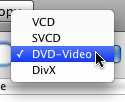
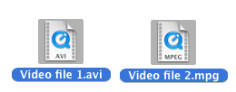
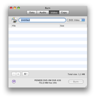
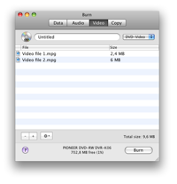
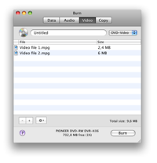
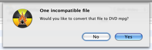

Burning Video Discs:
Burn can create four types of video discs. VCD is the first digital video disc format. After that came SVCD which has a higher resolution. Then came DVD-Video discs which are now the common way to distribute digital video. A lot of the modern DVD-Players can play DivX discs. This format is especially popular on the internet. DivX files are often a lot smaller than MPEG2 (used on DVD-Video discs), but still look and sound reasonable.
1 Select a format
Choose a format in the popup. It's important to know
which video-discs are supported by your player. Check your manual or
player to see what's supported.

2 Select some video files
Select some video files, most video files are supported.
Note: some protected QuickTime files may not work.

3 Drop them in the list:
Drop the selected files in the list. If the files are
already the right format they will be added. If not Burn will ask to
convert them to the right format.
 


4 Click on Burn
This will bring up a dialog.

5 Choose options
Choose options for the burning session. For more settings, see the
Preferences under the Burn menu.

6 Burn the disc
Now click Burn to burn the disc.

7 Burn
will burn the disc
While burning Burn will show a dialog with the status of the
burn.